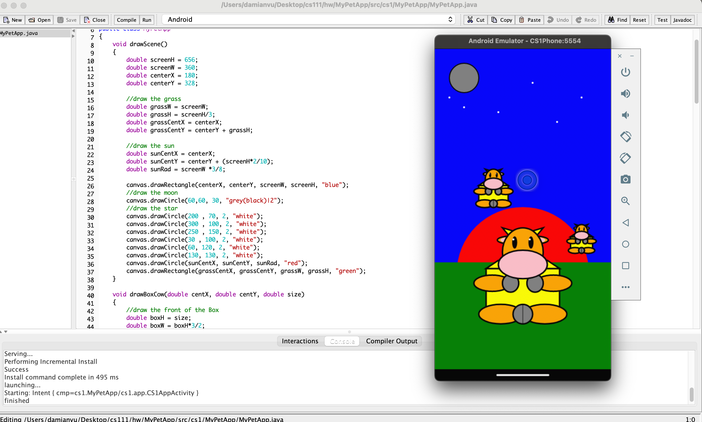
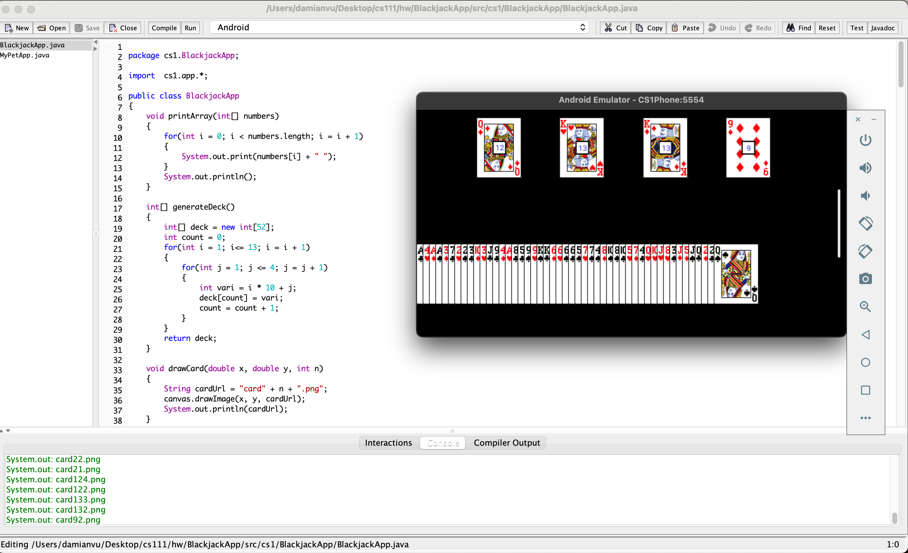
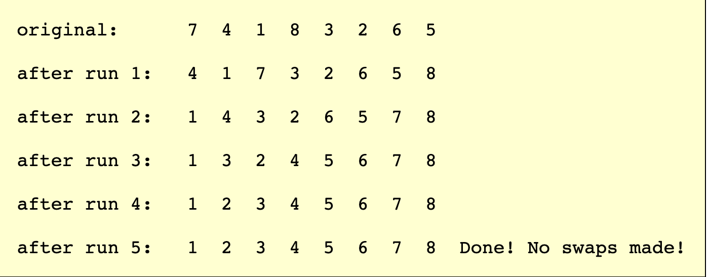
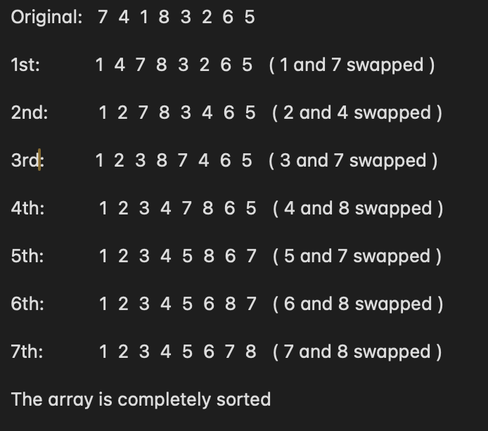
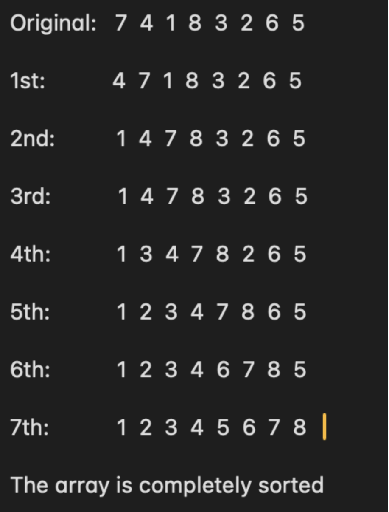
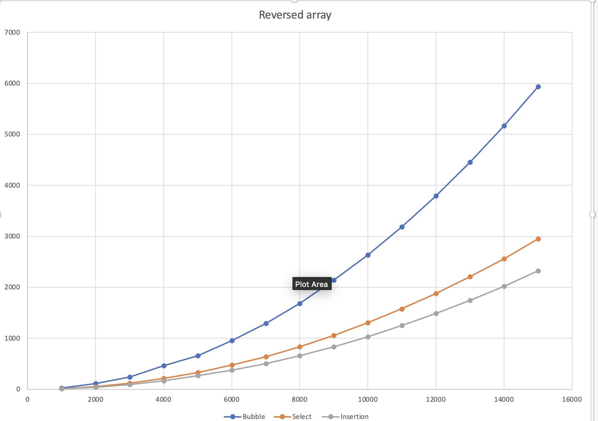
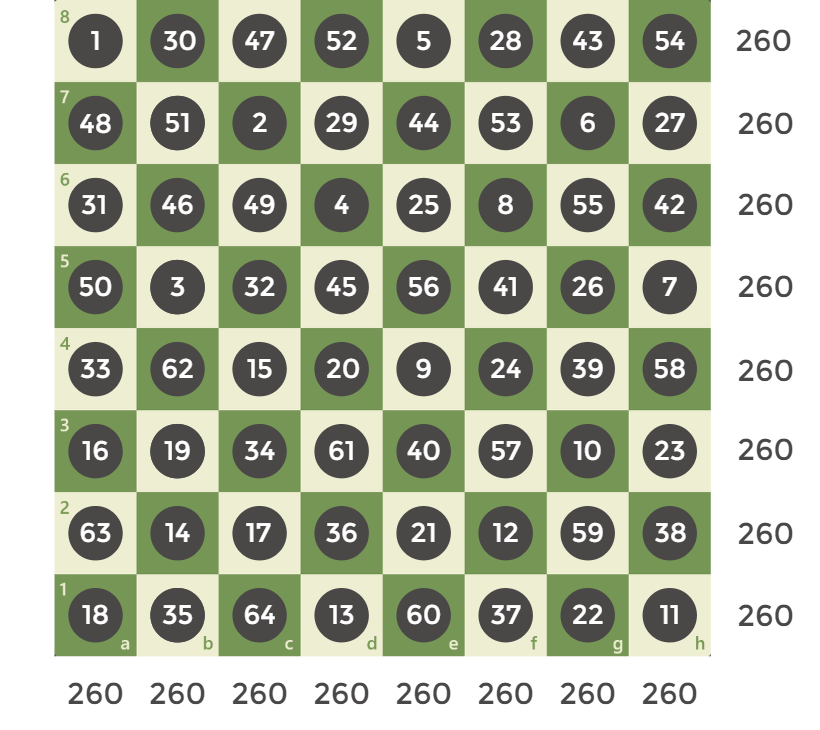

COMPUTER SCIENCE 111 AT GETTYSBURG COLLEGE
Posted on: 12/24/2023Damian Vu

I just finished my first Computer Science class( Cs111) with Professor Ilinkin at Gettysburg last December. The class indeed is a perfect one as an introductory to Programming Language (Java). Even though it was not my first time learning Computer Science, I found the class interesting and reinforced what I have known.
The class uses Dr. Java as the IDE for in-class work and homework. DrJava is beginner-friendly and created by the JavaPLT group at Rice University. The tools are designed so that class work outcomes are Android-like projects that are implemented on an Android Emulator (No knowledge of Android needed - using custom library canvas here ). For more information, read Professor Ilinkin's papers here.
The class for sure covers basic syntax in Java including variable types, loops, if statements, and methods.
The very first assignment of the class is to draw an animal of favorite using class materials.
The purposes of the assignment are to get familiar with the canvas library and also to build the first brick of a graphical design mindset. What beginner coders might find struggling is to calculate each diagram responsive to the phone screen.
One interesting thing in the class is that the Professor interacts a lot with students by asking us what to take into consideration when starting a task - what kinds of variables should we consider? etc… For the homework of these sections, we are asked to create responsive games, such as Blackjack or Hangman, using DrJava
The Touch class was introduced, a build-in class of the class. The app is made interactive by the line Touch touch = canvas.waitForTouch(), which will wait for the user to touch the screen.
In the class, we are introduced to 3 kinds of sorting algorithms: Bubble, Insertion, and Selection.
Bubble Sort first goes over respectively n-1 pair of numbers in the n elements array and swaps the smaller and bigger numbers into order (smaller first and bigger after it). It then repeats the same process over and over until the array is sorted. This sorting method pushes the biggest number of the unsorted part to the lefter most of that part.
 my class noteSelection Sort repeatedly swaps the smallest number of the unsorted part of the array and the first number of that part. Therefore, the array, using this sorting method, is sorted from the left.
Insertion sort goes over all numbers in the array respectively ( the array changes every time ) and pushes the number that is currently considered to the left until it meets another one smaller than itself. Using this method, the left part of the array compared to the current considering number is always sorted.
After learning the concepts of three methods, we learned the time complexities of the three methods of sorting reversed and sorted arrays. This is indeed just a really basic and small part of time complexity in programming. However, it is important and helpful to primarily build an optimal programming mindset. The complexity comparison for the three methods in sorting a reversed array is shown below.
The Y axis shows sorting time( in milliseconds ) and the X axis shows the array size.
The class knowledge touches a little bit on the recursion part, which is divided into two types: tree recursion and linear recursion. The section begins with a discussion about the Fibonacci array - an old-school recursive problem. The nth number in the Fibonacci array is the sum of the n-1th and n-2th of the same array. We are taught of the recursive method as a lazy way to calculate when we(pretend to be calculating nth number) ask our friends(who are calculating n-1th and n-2th numbers). These friends then asked other friends who were calculating other numbers of the array until meeting someone knew what number they were having. It is important in recursion to calculate all the boundaries and exceptions and put them on top of the method to avoid an infinite loop.
A fun and famous problem we solved in class was the Knight Tour. We had to write a method for the solution so that a knight could travel all the boxes of a nxn chess board without repeating any step.
 a solution from chess.comOne way to solve this problem is by using recursive. The recursive method will intake parameters including the board of the current state, the current position of the knight ( the row and column number), and the current step of the knight. The method type is boolean which true indicates that the current move is a solution. The first boundary is if the current step is nxn + 1 - the knight has already traveled all the boxes. For the other moves, we check if it is the right one by checking all possible moves from the current state ( 8 is maximum and no step is repeated ) and see if just one of the moves is right then the current state is right. The board is a 2D integer array in which a zero is a clear step ( the knight never traveled there) and a bigger-than-zero is a traveled step ( the number is the number of steps the knight made ). An important note is that for every state that is in consideration, we mark the step of the state as current step and unmark it if after checking all the steps around it, we find the current state is wrong. My code for the problem is below.

I initialized the board with -1 and my first step is 0.
The course also introduces really basic concepts of Object Oriented Programming ( OOP ) including class, some modifiers ( public and private ), and constructor. For this part assignment, I made a BlackJack game ( shown above) using classes. The classes include Deck, Player, and Casino.
Besides some of the assignments above, we also made some other cool projects. Check out my Github if it might be helpful. Thank you for reading this post!